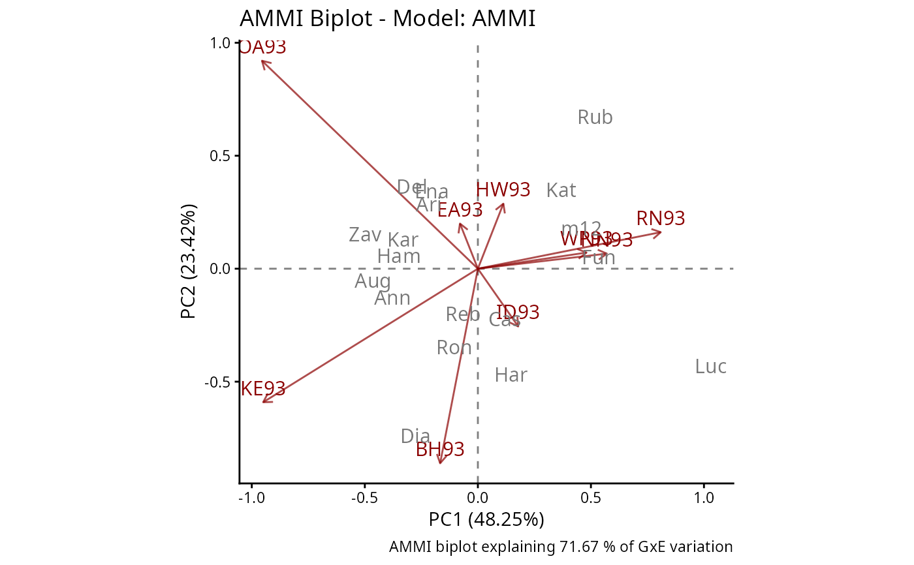
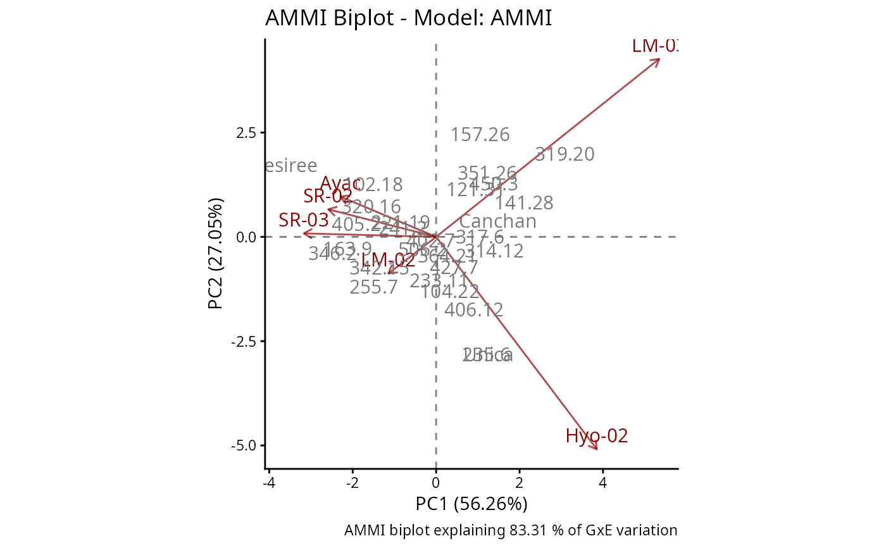

Generates a high-quality biplot (PC1 vs PC2) for classical or robust AMMI models using the ggplot2 framework.
Usage
rAMMIPlot(
model_res,
colGen = "gray47",
colEnv = "darkred",
sizeGen = 6,
sizeEnv = 6,
titles = TRUE,
footnote = TRUE,
axis_expand = 1.2,
limits = TRUE,
axes = TRUE,
axislabels = TRUE
)Arguments
- model_res
an object of class
rAMMIgenerated byrAMMIModel.- colGen
color for genotype labels. Defaults to `"gray47"`.
- colEnv
color for environment labels and vectors. Defaults to `"darkred"`.
- sizeGen
text size for genotype labels. Defaults to 6.
- sizeEnv
text size for environment labels. Defaults to 6.
- titles
logical. If `TRUE` (default), a title indicating the model type is added to the plot.
- footnote
logical. If `TRUE` (default), a caption with the percentage of explained GxE variation is added at the bottom.
- axis_expand
numeric value to expand the axis limits. Useful to prevent labels from being cut off. Defaults to 1.2.
- limits
logical. If `TRUE` (default), uses
coord_fixed()to maintain a 1:1 aspect ratio between axes.- axes
logical. If `TRUE` (default), draws dashed horizontal and vertical lines passing through the origin (0,0).
- axislabels
logical. If `TRUE` (default), includes axis titles with the percentage of variance explained by each principal component.
Value
A ggplot2 object. This allows further customization using
standard ggplot layers (e.g., + theme_bw()).
Details
the biplot is constructed using a scaling factor of 0.5 (symmetric scaling), which allows representing both genotypes and environments in the same algebraic space. Genotypes are displayed as points (text), and environments are represented as vectors from the origin.
Examples
library(agridat)
data(yan.winterwheat)
# Classical AMMI
mod_ammi <- rAMMIModel(yan.winterwheat, genotype = "gen",
environment = "env", response = "yield", type = "AMMI")
rAMMIPlot(mod_ammi,sizeGen=4,sizeEnv=4)

data(plrv)
mod_ammi_rep <- rAMMIModel(plrv, genotype="Genotype", environment="Locality",
response="Yield", rep="Rep", type="AMMI")
rAMMIPlot(mod_ammi_rep,sizeGen=4,sizeEnv=4)
